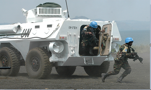
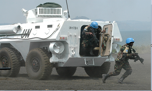

MONUSCO and the FIB - Check Back Soon


My second GIS project is now online. Simply follow this link or click on the thumbnail above. The current map legend is a place-holder while I create something more appropriate. In the coming days ill be making my research portfolio availible. I'm also working to provide an update on my two ongoing GIS projects: Protection of Civilians by the numbers, and the displacement of Rohingya minority in Myanmar.
The first of the content is now coming online. The Bosnia flood waters and minefields is a project from graduate school. I'm currently working on finishing the Protection of Civilians map, and the page for the project updates is live as well.
Hi there, and thank you for your interest in my page. My name is Marko, and I've just launched this website as a way to showcase some of my projects, as well as provide a platform for my future work. The website is also meant to sharpen my own skills in web development and web-based mapping, with an emphasis on international affairs. If there are broken links, or some things just seem out of place, please know that this is a work-in-progress, so check back frequently for updates. Feel free to reach out to me if you have any comments or suggestions at hello@markostanic.net
Kindest regards,
Marko Stanic